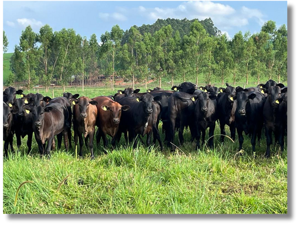
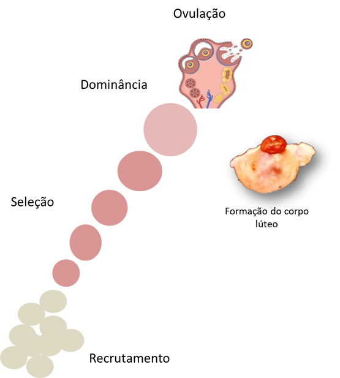

Aspiração Folicular (OPU)
Anatomia
Para realizar a aspiração folicular é essencial ter um conhecimento detalhado da anatomia bovina... O veterinário deve ser capaz de identificar a vagina, cérvix, útero e ovários, para acessar corretamente os folículos.


Conteúdo
Guia de Oócitos
Este guia aborda os métodos de seleção de oócitos bovinos, um passo crucial para o sucesso da fertilização in vitro (FIV).
🔵 O que é um oócito?
O oócito é o gameta feminino, produzido nos ovários e localizado dentro de cada folículo. Durante o ciclo reprodutivo, ele amadurece e é liberado na ovulação.
Uma fêmea bovina já nasce com todos os seus folículos.

Classificação da População Folicular
❌ Folículos pré-antrais
Incluem os primordiais, intermediários, primários e secundários. Estes folículos não são viáveis para fecundação por não possuírem a zona pelúcida bem desenvolvida.
✅ Antrais ou cavitários
Possuem uma cavidade (antro) preenchida por fluido. Estes são os folículos que selecionamos para o laboratório, pois contêm oócitos com potencial para gerar embriões.
PARA O LABORATÓRIO, DIRECIONAMOS APENAS OÓCITOS QUE PODEM SER FECUNDADOS.
Critérios de Análise Laboratorial
Seleção no Laboratório
Buscamos oócitos que tenham maior potencial de se desenvolverem em embriões. Nem todo oócito aspirado é viável. A seleção é o primeiro passo da classificação.
Integridade do Oócito
Deve estar com a membrana intacta, sem rupturas.
Aspecto do Citoplasma
Deve ser homogêneo e com coloração adequada (nem muito claro, nem muito escuro).
Células do Cumulus
O oócito deve estar rodeado por múltiplas camadas de células do cumulus, compactas e brilhantes.
Classificação de Oócitos
Veja em detalhes cada classificação. Arraste para o lado em cada card para ver mais imagens de exemplo.
Mesa de Seleção
Lista de Materiais Necessários para Trabalhar.
Equipamentos Essenciais

Lupa Estereoscópica (Estereomicroscópio)
Equipamento óptico crucial que fornece uma imagem tridimensional e ampliada... Permite a visualização detalhada para localizar, avaliar a qualidade (classificar) e manipular os complexos cumulus-oócito (CCOs) com precisão.

Mesa Aquecedora
Uma placa com controle de temperatura, geralmente ajustada para 37-38°C... Sua função é manter as placas de Petri e os meios de cultura aquecidos... evitando o choque térmico...

Nobreak ou Estabilizador
Dispositivo de proteção elétrica... É fundamental para proteger equipamentos sensíveis e caros... e para garantir a continuidade dos processos em caso de instabilidade elétrica.

Banho Maria Seco (Termobloco)
Equipamento utilizado para aquecer e manter os tubos contendo os meios de cultura em uma temperatura constante... oferece um aquecimento mais prático e com menor risco de contaminação.

Transportadora de Oócitos (TO)
Um recipiente isotérmico portátil... projetado para transportar os oócitos do local da coleta... até o laboratório... preserva a viabilidade dos oócitos durante o transporte.

Micropipetador de 10µl e Micropipetador de 200µl
Ferramentas de alta precisão para medir e transferir pequenos volumes de líquidos... O de 200µl é frequentemente usado para... lavagem, enquanto o de 10µl é utilizado para... manuseio de pequenos grupos de oócitos...
Seringa de 20 ml e Agulha 1,2 x 40 mm (18G)
O conjunto é utilizado para a aspiração do líquido folicular dos ovários. A seringa cria o vácuo necessário... Este procedimento é conhecido como Aspiração Folicular (OPU - Ovum Pick-Up).
Consumíveis e Vidraria

Tubos Cônicos de 50ml (Tipo Falcon)
Utilizados para receber o líquido folicular aspirado... Seu fundo cônico facilita a sedimentação e a concentração dos oócitos...
Cilindro de Mistura Gasosa (5% O₂, 5% CO₂, 90% N₂)
Fornece a atmosfera gasosa específica necessária para a Maturação In Vitro (MIV)... Esta mistura simula as condições fisiológicas...

Placa de Petri (90 x 15 mm ou 60 x 15 mm)
Recipientes rasos e estéreis onde o líquido folicular é despejado para a busca dos oócitos... A placa maior (90 mm) é usada para "garimpar"... a menor (60 mm) é ideal para a lavagem...

Mini Filtros para Oócitos (Filtro Coletor de Oócitos/Embriões)
Dispositivo com uma malha fina... permite a passagem do líquido folicular, mas retém os oócitos... É uma alternativa à sedimentação, acelerando o processo...
Ponteira P (Branca) e Ponteira M (Amarela)
Pontas descartáveis que se encaixam nos micropipetadores... Ponteiras brancas (P10/P20) são para volumes menores... e amarelas (P200) para volumes intermediários...
Parafilm®
Filme plástico, flexível e autovedante. É usado para selar as placas de Petri durante a maturação, evitando a evaporação... prevenindo a contaminação...
Suporte e Biossegurança
Termômetro
Utilizado para verificar e aferir a temperatura da mesa aquecedora, do banho maria e da transportadora, garantindo que todos os equipamentos estejam na temperatura correta...
Canetas para Identificar Tubos
Marcadores permanentes... Indispensáveis para a correta identificação das amostras... garantindo a rastreabilidade...

Pano de Campo
Pano estéril ou devidamente higienizado que é usado para forrar a bancada de trabalho. Delimita uma área limpa e organizada...

Luvas para Procedimentos
Item de proteção individual (EPI) obrigatório. Protegem tanto o operador... quanto os oócitos da contaminação...
Álcool 70%
Solução desinfetante utilizada para a assepsia das mãos enluvadas, da bancada... minimizando o risco de contaminação...

Papel Toalha
Usado para secar superfícies, limpar pequenos derramamentos e auxiliar na manutenção da limpeza geral do ambiente de trabalho.
Materiais para OPU
Um checklist e guia dos materiais necessários para o procedimento de OPU em campo será adicionado aqui.
Em Construção
Esta seção está sendo preparada.
INTRODUÇÃO
A fisiologia da reprodução bovina é fundamental para o entendimento e a otimização da eficiência reprodutiva dos rebanhos. O conhecimento dos mecanismos hormonais e anatômicos possibilita um manejo mais preciso e favorece a aplicação eficaz das biotecnologias reprodutivas.
Porque Estudar?
Atuação Técnica e Embasada
Compreender a fisiologia reprodutiva é essencial para uma atuação técnica e embasada.
Eficiência Reprodutiva
Aprofundar esse conhecimento resulta em maior eficiência reprodutiva dos rebanhos.
Controle do Ciclo Estral
Permite um controle mais preciso do ciclo estral por meio do uso adequado de fármacos.
Aumento da Produtividade
Contribui significativamente para o aumento da produtividade.
Sucesso das Biotécnicas
Facilita a implementação e o sucesso das biotécnicas reprodutivas, como a IATF e a FIV.
Anatomia do Trato Reprodutivo
O trato reprodutivo está localizado na cavidade pélvica em fêmeas não gestantes.
O conhecimento anatômico... é fundamental... A eficácia e a precisão desses procedimentos dependem diretamente da compreensão detalhada da anatomia reprodutiva.
GENITÁLIA INTERNA
Ovários, Tubas uterinas, Útero, Cérvix
GENITÁLIA EXTERNA
Vagina, Vestíbulo, Vulva
Termos Importantes
Nulíparas
Fêmeas que ainda não apresentaram parição (parto) - comumente chamadas de novilhas.
Primíparas
Fêmeas que apresentaram apenas uma parição.
Multíparas
Fêmeas que apresentaram mais de uma parição - comumente chamadas de vacas.
Doadora

Receptora
EIXO HIPOTÁLAMO HIPÓFISE-GONADAL
Quando a fêmea atinge a puberdade, ocorre uma ativação dos seus órgãos sexuais, acontecendo a maturidade sexual, ativando o eixo hipotálamo hipófise-gonadal. Definido como o momento entre os ciclos estrais (cio).
Lembre-se
Hipotálamo
Produz GnRH, que estimula a hipófise.
Hipófise
Libera FSH e LH em resposta ao GnRH.
Ovários
Respondem ao FSH e LH, regulando o ciclo.
Feedback Positivo
O estradiol estimula GnRH e LH (ovulação).
Feedback Negativo
A progesterona inibe GnRH e FSH (gestação).
Fase de Recrutamento
Um grupo de folículos começa a se desenvolver saindo do estágio de folículo primordial quiescente para o estágio de folículo primário ativado, onde passam a sofrer a ação do FSH.
HORMÔNIOS
Para relembrar: Os hormônios reprodutivos são substâncias químicas... Eles regulam o ciclo estral, controlam a ovulação... e preparar o útero para a gestação.
| HORMÔNIO | ESTRUTURA | ORIGEM | FUNÇÕES PRINCIPAIS |
|---|---|---|---|
| GnRH | Peptídeo | Hipotálamo | Estimula a liberação de FSH e LH |
| FSH | Glicoproteína | Adeno-hipófise | Estimula o desenvolvimento de folículos |
| LH | Glicoproteína | Adeno-hipófise | Estimula a ovulação e a luteinização |
| Estradiol (E2) | Esteroide | Ovários (Folículo) | Estimula o comportamento do Estro, induz pico pré-ovulatório |
| HORMÔNIO | ESTRUTURA | ORIGEM | FUNÇÕES PRINCIPAIS |
|---|---|---|---|
| Progesterona (P4) | Esteroide | Corpo Lúteo | Manutenção da gestação |
| Prostaglandinas (PGF2a) | Eicosanoide | Endométrio | Luteólise do Corpo Lúteo, contrações no parto |
| Prolactina | Proteína | Adeno-hipófise | Promove a lactação e comportamento materno |
| Ocitocina | Proteína | Hipotálamo e CL | Estimula as contrações e liberação do leite |
| HORMÔNIO | ESTRUTURA | ORIGEM | FUNÇÕES PRINCIPAIS |
|---|---|---|---|
| Relaxina | Polipeptídico | Corpo Lúteo | Dilata a cérvix e contrações uterinas |
| Ativina | Proteína | Ovário | Estimula a secreção de FSH |
| Inibina | Proteína | Células da granulosa | Inibe secreção de FSH |
| Folistatina | Proteína | Ovário | Modula secreção de FSH |
FASES DO CICLO ESTRAL
Ciclo estral
As fêmeas bovinas são poliéstricas não estacionais e monovulatórias. Em média, o ciclo estral delas dura 21 dias... O ciclo estral é dividido em 04 fases:
Proestro
Os folículos estão em fase de recrutamento... Ocorrem ondas foliculares, onde o melhor folículo será o dominante.
- Duração de 2 a 3 dias;
- Recrutamento das ondas foliculares, foliculogênese;
- Aumento de estradiol e baixa de progesterona;
- Fêmea aceita o receptáculo, porém não aceita a monta;
RECRUTAMENTO DE FOLÍCULOS E AUMENTO DO FSH
Estro
Nessa fase, já há um folículo dominante nos ovários produzindo grandes quantidades de estradiol, responsável pela manifestação do cio na fêmea.
- Duração de 6 a 24 horas;
- Pico de estradiol; Cérvix dilatada;
- Aceitação da monta parada; Inquietação;
- Presença de muco semelhante a "clara de ovo".
PICO DE ESTRADIOL E COMPORTAMENTO DE CIO
Metaestro e Diestro
Após o término do estro, no metaestro, ocorre a ovulação... Se não houver gestação, esse CL entra em luteólise.
- A ovulação ocorre em média 12 horas após o fim do estro;
- Fêmea não aceita monta e não atrai o macho;
- Evolução do corpo hemorrágico até diferenciação em corpo lúteo;
- CL formado - alta concentração de progesterona;
- Novas ondas foliculares
OVULAÇÃO E FORMAÇÃO DO CORPO LÚTEO
Fase de Dominância e Atresia
Fase de Dominância
O folículo destacado passa a produzir inibina, provocando a atresia dos folículos subordinados a ele, que são altamentes dependentes do FSH.
Fase de Atresia
A vaca em seu ciclo possui em média três ondas foliculares, onde aqueles que possuem menos receptor de LH vão entrando em atresia. No caso de animais com corpo lúteo funcional, por ação da progesterona, haverá atresia de folículos.
RESUMINDO
Os folículos passam por fases de recrutamento, seleção e dominância. Apenas o folículo dominante ovula, enquanto os outros sofrem atresia.

Doadora
São fêmeas de alto valor genético e zootécnico, destinadas à aspiração folicular. Em resumo, os oócitos dessas fêmeas são coletados para uso na reprodução assistida, visando à produção de embriões.
- Função: Produzir óvulos ou embriões de alto valor genético.
- Manejo: Nutrição, sanidade e manejo rigorosos para maximizar a produção de embriões.

PODEMOS REALIZAR A OPU EM QUALQUER FASE DO CICLO ESTRAL, SEM A NECESSIDADE DE UMA SINCRONIZAÇÃO HORMONAL.
Receptora
São fêmeas destinadas a serem "barrigas de aluguel", ou seja, receberão o embrião produzido a partir de animais de genética superior, seja in vivo ou in vitro. Na transferência de embrião em tempo fixo é necessário sincronizar previamente o ciclo desses animais.
- Função: Gestar embriões transferidos.
- Manejo: Sincronização do ciclo estral para receber o embrião no momento ideal.
A DIFERENÇA É QUE NAS RECEPTORAS, A TETF É REALIZADA NA FASE DE DIESTRO, QUANDO O OVÁRIO JÁ APRESENTA UM CORPO LÚTEO PRODUZINDO PROGESTERONA.
Considerações Finais
Compreender a fisiologia da reprodução bovina é essencial para melhorar a eficiência reprodutiva e aplicar biotecnologias de maneira eficaz.
Guia de Estudo PIVE
Navegue pelas abas para aprender sobre a Produção In Vitro de Embriões.
O Processo da PIVE
A PIVE tem início com a coleta de oócitos imaturos de uma fêmea doadora. Esses oócitos são submetidos a um processo de maturação in vitro, que dura aproximadamente 24 horas. A etapa laboratorial propriamente dita começa quando os oócitos maduros são fertilizados por espermatozoides em um ambiente controlado. Após cerca de sete dias de cultivo embrionário, os embriões formados são transferidos para o útero de fêmeas receptoras ou submetidos à criopreservação.

Estrutura do Laboratório
O laboratório é dividido em três áreas principais: área suja, área de transição e área limpa.
A área limpa é onde ocorrem os processos críticos, Fertilização dos Oocitos e Cultivo dos Embriões e deve ser mantida esterilizada.
Equipamentos essenciais incluem incubadoras, capelas de fluxo laminar, lupas, centrífugas e botijões de sêmen.

Coleta dos ovócitos diretamente dos folículos ovarianos das doadoras.
Os ovócitos coletados são maturados em meio de cultivo específico por cerca de 24 horas, podendo ocorrer na incubadora no laboratório ou na incubadora de transporte.
MATURAÇÃO IN VITRO (MIV) - Passos
Vamos recordar que os oócitos são coletados e colocados em tubos de maturação.
Eles devem ser fecundados em média 24 horas após o início da maturação.
São encaminhados para o laboratório nas transportadoras.

Sequência Visual da Maturação


Os ovócitos maturados são colocados em contato com espermatozoides capacitados em uma placa de cultivo. A capacitação espermática envolve a preparação do sêmen para que os espermatozoides estejam aptos a fertilizar os ovócitos.
FERTILIZAÇÃO IN VITRO (FIV)
A Fertilização In Vitro (FIV) é uma técnica de reprodução assistida que consiste em fecundar o óvulo com o espermatozoide fora do corpo, em um ambiente controlado de laboratório. óvulos e espermatozoide são colocados juntos em uma placa de cultivo para que ocorra a fertilização.

Capacitação Espermática
A capacitação espermática é um processo essencial para que os espermatozoides adquiram a capacidade de fertilizar um óvulo. Este processo envolve uma série de mudanças bioquímicas e fisiológicas que ocorrem nos espermatozoides, preparando-os para a fertilização.
Durante a capacitação, os espermatozoides passam por várias modificações, incluindo:
- Remoção de proteínas e lipídios da membrana plasmática: Isso aumenta a fluidez da membrana, facilitando a fusão com a membrana do óvulo.
- Aumento da motilidade: Os espermatozoides aumentam a atividade do flagelo, o que melhora sua capacidade de nadar em direção ao óvulo.
- Alterações no acrossoma: O acrossoma, uma vesícula na cabeça do espermatozoide, se torna preparado para a reação acrossômica, que é crucial para a penetração na zona pelúcida do óvulo.
No contexto laboratorial, a capacitação espermática é induzida através de técnicas específicas, como o percoll a utilização de meios de cultivo que contêm substâncias como heparina, PHE e outros agentes que promovem essas mudanças nos espermatozoides.
Este processo é fundamental para garantir que os espermatozoides estejam aptos a fertilizar os óvulos durante a fertilização in vitro (FIV).
Para relembrar

FIV - Detalhes do Processo

Preparação do Percol: Percoll 90% concentração inicial do percol, percoll 45% percoll 90% diluído em algum diluente expecifico para a FIV. Durante a capacitação o sêmem deve nadar de 1 para 2 para se capacitar.
Centrifuga: A centrifugação gera um força contraria ao sêmen forçando-o a nadar em direção ao fundo do tubo.
Após a Fertilização as placas contendo os oócitos e sêmen vão para a incubadora de FIV onde permanecem por aproximadamente 24 horas.

Incubadora: a Incubadora possui um ambiente controlado com 5% de CO2, temperatura a 38.5 e humidade saturada, essas condições juntamente com o meio imitam o ambiente uterino.

Após a fertilização, os zigotos são cultivados em meio específico para permitir o desenvolvimento embrionário. Esse cultivo ocorre em incubadoras que simulam o ambiente uterino.
CULTIVO CELULAR (D1)
O cultivo celular é uma etapa essencial no processo de produção in vitro de embriões, em média 24 horas após a fertilização os ovócitos são desnudados, ou seja, as células do cúmulo que os envolvem são removidas através de um processo de turbilhonamento realizado com uma pipeta, os ovócitos fertilizados são transferidos para um meio de cultivo específico.

Esse meio é preparado em placas de cultivo, onde o objetivo do cultivo celular é permitir que os ovócitos fertilizados, agora embriões em desenvolvimento, possam se dividir e crescer em um ambiente controlado que simula as condições do útero materno.
Durante essa fase, os embriões são mantidos em incubadoras que controlam a temperatura, a umidade e a concentração de gases, como CO2 e nitrogênio, para garantir um ambiente ideal para o desenvolvimento embrionário.
Incubadora para desenvolvimento embrionário
Sequência Visual do Cultivo


Entre o terceiro e o quarto dia de cultivo, os embriões são avaliados quanto à divisão celular para verificar a qualidade e o desenvolvimento.
DIVISÃO CELULAR (D3/D4)
- No terceiro ou quarto dia, avalia se a divisão celular dos embriões.
- Permite identificar a taxa de fecundação e a qualidade inicial dos embriões.


No sexto dia, é feita uma previsão da qualidade dos embriões, e no sétimo dia, os embriões são avaliados para decidir se serão transferidos para receptoras ou congelados.
PREVISÃO (D6)
- No sexto dia, avalia-se o desenvolvimento das mórulas e blastocistos.
- O objetivo é prever quantos embriões estarão prontos para transferência ou congelamento no dia seguinte.

EMBRIÕES - Classificação (D7)
No sétimo dia, de desenvolvimento embrionário os embriões são classificados em: Mórulas, Blastocistos iniciais, blastocistos, Blastocistos expandidos, Blastocisto eclodindo, Blastocistos eclodido. Os estágios de desenvolvimento Blastocistos e Blastocistos expandidos são eleitos para transferência ou congelamento, pois neste estágio conseguimos avaliar bem se há defeitos na morfologia dos embriões.


Para anotar
| Classificação | Abreviatura |
|---|---|
| Mórula | Mo |
| Blastocisto inicial | Bi |
| Blastocisto | BL |
| Blastocisto expandido | Bx |
| Blastocisto eclodindo | Bn |
| Blastocisto eclodido | Be |
Os embriões de boa qualidade são envasados em palhetas para transferência ou congelamento. Existem dois métodos principais de congelamento: o congelamento lento (DT) e o congelamento rápido (vitrificação).
ENVASE
Os embriões são colocados em palhetas com colunas de ar e meio de cultivo. E após o envase, colocado nas transportadoras.

CONGELAMENTO DE EMBRIÕES

EMBRIÕES DT (Direct Transfer)

Pontos Positivos:
- Processo Simples: O DT é um método de congelamento lento que utiliza uma palheta convencional.
- Custo: Geralmente, o custo do DT é menor em comparação com a vitrificação.
- Estabilidade: A técnica é bem estabelecida e amplamente utilizada.
Pontos Negativos:
- Taxa de Prenhez: As taxas de prenhez com DT tendem a ser ligeiramente inferiores.
- Tempo: O processo de congelamento é mais demorado.
- Sensibilidade: O embrião pode ser mais sensível ao processo de descongelamento.

Máquina que realiza a curva de congelamento
EMBRIÕES VITRIFICADOS
Pontos Positivos:
- Alta Taxa de Sucesso: A vitrificação oferece taxas de prenhez mais altas.
- Congelamento Rápido: O processo é rápido, minimizando a exposição a condições subóptimas.
- Flexibilidade: Permite o congelamento de múltiplos embriões na mesma palheta.
Pontos Negativos:
- Custo Elevado: Pode ser mais cara devido a materiais e equipamentos específicos.
- Complexidade: O processo é mais técnico e exige maior precisão.
- Mão de Obra: Exige técnicos qualificados para o descongelamento.


CONCLUSÃO
Este guia de estudos apresentou uma visão abrangente das etapas que compõem a Produção In Vitro de embriões bovinos. Dominar esses processos é fundamental para profissionais que desejam se especializar e atuar com excelência na área de reprodução animal.
Mais Informações
Sobre o Projeto
Autor(a): Pedro Henrique
Objetivo: Facilitar o acesso rápido e simplificado, pelo celular, a conteúdos sobre OPU e seleção de oócitos, por meio de resumos claros e materiais organizados para consulta e estudo em qualquer momento